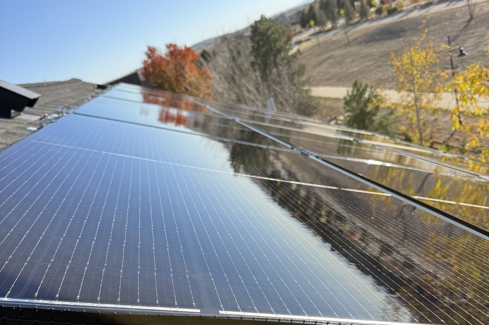
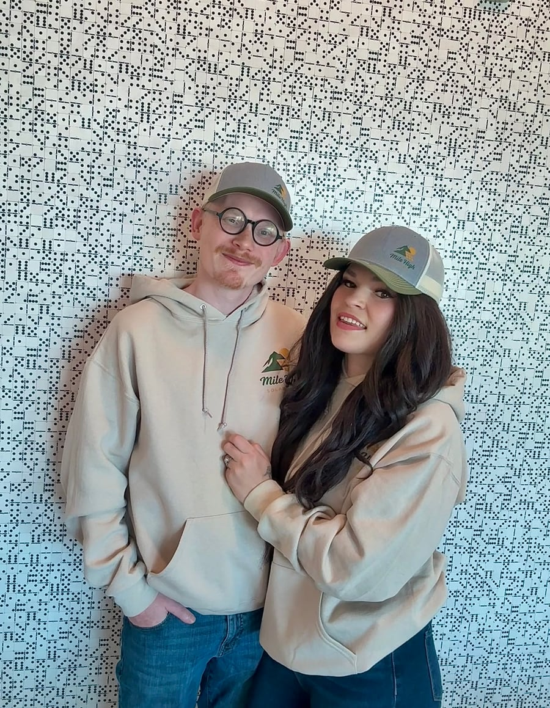

Orphaned Solar System Care
Your Solar Installer Closed — Now What?
Your panels are still on the roof, and they may still be making power — but the company that installed them is gone, and there's nobody to call. Mile High Solar Care exists because of an orphaned system. We can help you get your monitoring access back, handle the ownership transfer, and give your system a documented inspection, so you know exactly what you own.
That's called an orphaned solar system, and it's more common in Colorado than most people realize. Installers close, get bought out, or quietly stop answering — and thousands of homeowners are left holding a system they paid for and nobody services.
Mile High Solar Care exists because of an orphaned system. Before there was a company, there was a friend whose installer — Titan Solar — went bankrupt and left their system behind. Jeremy learned solar to keep that system running. That work became this business.
So if your installer is gone, start here: we can help you get your monitoring access back, handle the ownership transfer if you bought or sold a home with solar, and give your system a documented inspection so you know exactly what you own. That's the first screen, because for most orphan owners, that's the actual problem.

This company started with an orphaned system
Mile High Solar Care grew out of a hard season. Meral — co-owner, and Jeremy's wife — was going through breast cancer treatment. Jeremy was working in a hospital and in nursing school. In the middle of all of it, a friend's solar installer, Titan Solar, went bankrupt, and their system was simply abandoned: no service company, no monitoring support, nobody who would even return a call about it.
Jeremy taught himself solar to keep that friend's system running. Then neighbors started asking. Then it became clear this wasn't one friend's problem — it was an industry-wide one, and the homeowners left behind had nowhere to turn.
We built Mile High Solar Care for exactly those homeowners. When we say we understand orphaned systems, we don't mean we read about them. We mean one is the reason we're here.
First things first: monitoring access and ownership transfer
Most orphan owners we meet have one of two problems before they ever have a cleaning problem:
"I can't see my system anymore." Your monitoring app shows nothing, or you never had the login in the first place. The monitoring account often still sits under the old installer's name. We help you get monitoring access back in your own name — transferred to you, working on your phone, showing your production again. We've completed Enphase ownership transfers for Colorado homeowners, and getting an owner back into their own system is some of the most satisfying work we do.
"I bought a house with solar — is it even mine?" When a home changes hands, the solar paperwork often doesn't. We help new owners document what they actually have — panels, inverter, approximate age and condition — and work through the ownership transfer so the system, and its monitoring, belong to the person who owns the roof.
If either of those sounds like you, that's the place to start. Everything else on this page comes after.
What we do for an orphaned system
We care for the whole system: cleaning, inspections, critter guards, and light service — plus electrical diagnostics and battery work by our certified electrician, Dilan. For an orphaned system, that usually looks like this:
- Inspection & Report — $245. A documented inspection of your whole system with photos and a written report: what you have, what condition it's in, and what we'd recommend next. This is the "somebody finally tell me what I own" visit.
- Electrical Diagnostic — $295. System not producing, underproducing, or throwing errors you can't interpret? We run a structured diagnostic and give you clear findings in plain language — and if a finding ever lands outside the work we handle, you'll know exactly what it is and which trade it needs.
- Maintenance Check + photo documentation — $149. A maintenance visit with photo documentation of the array and roofline, so you have a dated record of your system's condition.
- Panel cleaning — $129 for systems up to 12 panels · $179 for 13–24 panels · $249 for 25–40 panels, plus a $50 surcharge for two-story homes. Pure-water, panel-safe cleaning (no harsh chemicals, no abrasives) with before/after photos. Dirty panels quietly cost production; orphaned systems often haven't been cleaned since the installer left.
- Critter guard — typically $1,095–$1,195, with a LIFETIME workmanship guarantee. Birds and squirrels love the space under unmaintained arrays. We install professional mesh guard and stand behind the workmanship for life.
- Panel removal + certified recycling — from $95 per panel. Dead or damaged panels shouldn't go to a landfill. We remove them safely, send every one to a certified recycler, and give you the Certificate of Recycling for your records.
- Battery service for orphaned storage. If your system includes a home battery, it can be orphaned right along with the panels. Our certified electrician, Dilan, can health-check, diagnose, and service orphaned batteries — see the storage section below.
Orphaned batteries and storage, too
Plenty of orphaned systems aren't just panels. If your home has a battery, it may have lost its support twice over — the installer closed, and in some cases the battery maker has since exited the business entirely. The battery still sits in your garage, still shows a percentage in an app you may no longer be able to open, and still matters on the one night the power goes out.
We now care for orphaned storage the same way we care for orphaned solar. Our certified electrician, Dilan, can document your battery — make, model, age, and condition — run a health check and electrical diagnostic on it, and service what can be serviced. If your battery's monitoring account is stranded under the old installer, we can help with that too, the same way we restore monitoring access for orphaned arrays.
One straight answer, because battery owners ask it constantly: if a battery maker has gone out of business, its product warranty may have gone with it. A manufacturer warranty is only as good as the manufacturer behind it, and we won't pretend otherwise. What never disappears is the ability to know what you have: a documented condition record, honest findings, and a clear answer on whether the right move is service, replacement, or adding new storage. If you'd like to add a battery — or replace a dead one — Dilan can also help with installation, quoted per system after inspection.
Full detail lives on our solar battery service page.
What we don't do — said plainly
We don't install new solar systems, and we don't do roofing. (Battery installation help is different — that's in scope, and it's covered on our battery service page.) If your system needs work outside our lanes, we'll document what we find, explain it clearly, and point you to the right licensed trade. We'd rather tell you that on day one than sell you something outside our scope.
Proof, not promises
- 5.0 stars across 42 Google reviews. Homeowners across the Denver metro trust us with their systems — including systems nobody else would touch.
- We show up for Colorado solar policy, too. On November 9, 2026, Jeremy testified at the Colorado Public Utilities Commission's hearing on the state's plug-in solar rules. Orphaned and small-system owners are exactly who those rules affect, and we were there.
- Real orphan work, already done. Completed Enphase ownership transfers, Enphase microinverter service, and diagnostics on systems whose original installers are long gone — this is our everyday work, not a new offering we invented for a webpage.
Adoption is the wrong word. This is just taking care of your system.
Your system doesn't care that its installer closed. It still needs cleaning, it still needs watching, and it can still produce for years — it just needs a company that will answer the phone.
That's us. Mile High Solar Care serves Aurora, Denver, and the Front Range. One call, one visit, and you'll know what you own, what it's doing, and who's taking care of it from here.
Related solar services
Questions orphan owners actually ask
My installer went out of business. Who do I call now?
Us — that's the short answer. An orphaned system still needs cleaning, inspection, and monitoring like any other system; it just needs a company willing to service a system it didn't install. That's our whole lane.
My solar app is offline. Are my panels still working?
Maybe — an offline app often means a monitoring or connection problem, not a dead system. Your panels may be producing fine while reporting nothing. A diagnostic visit separates "the app lost contact" from "the system has a real problem," and we can help get your monitoring access restored in your name.
I bought a home with solar panels. What do I actually have?
Start with an Inspection & Report. We'll document the panels, inverter, and visible condition, give you photos and a written report, and help with the ownership transfer so the monitoring account belongs to you.
I'm selling my home. Can you document the system for the sale?
Yes. A documented inspection and photo record gives your buyer (and their lender and inspector) something real to look at, and we can help the new owner with the ownership transfer after closing.
Is my warranty still good if my installer closed?
Your installer's workmanship warranty usually died with the company — that's the honest answer. But manufacturer warranties on the equipment itself follow their own terms: panel and inverter manufacturers generally still honor their product warranties regardless of who installed them. We can't make warranty determinations for a manufacturer, but we can document your system's condition and help you understand what paperwork you have, which is where any claim starts.
Can you get me back into my monitoring?
In most cases, yes — that's the ownership transfer and monitoring access work described above. If your monitoring account is still registered to your old installer or a previous homeowner, we help move it to you.
My system has a battery, and its installer — or maker — is gone too. Can you help?
Yes. Orphaned storage is part of our work now: our certified electrician can document, health-check, diagnose, and service your battery, and help restore stranded monitoring. One honest caveat: if the maker has ceased operations, its product warranty may no longer have anyone behind it — we'll tell you exactly where you stand.
Can you add a battery to my orphaned system?
Yes — adding storage is one of the most natural upgrades for a system that has already lost its installer, because you get a company that will service the whole setup from here. Battery installation is quoted per system after an inspection, so the recommendation fits your existing equipment.